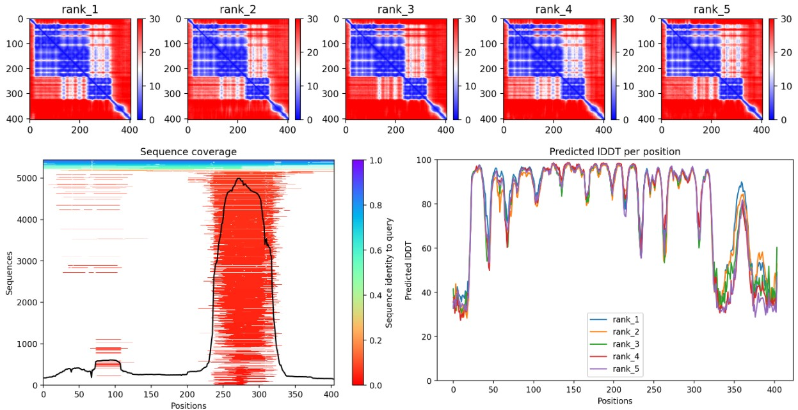
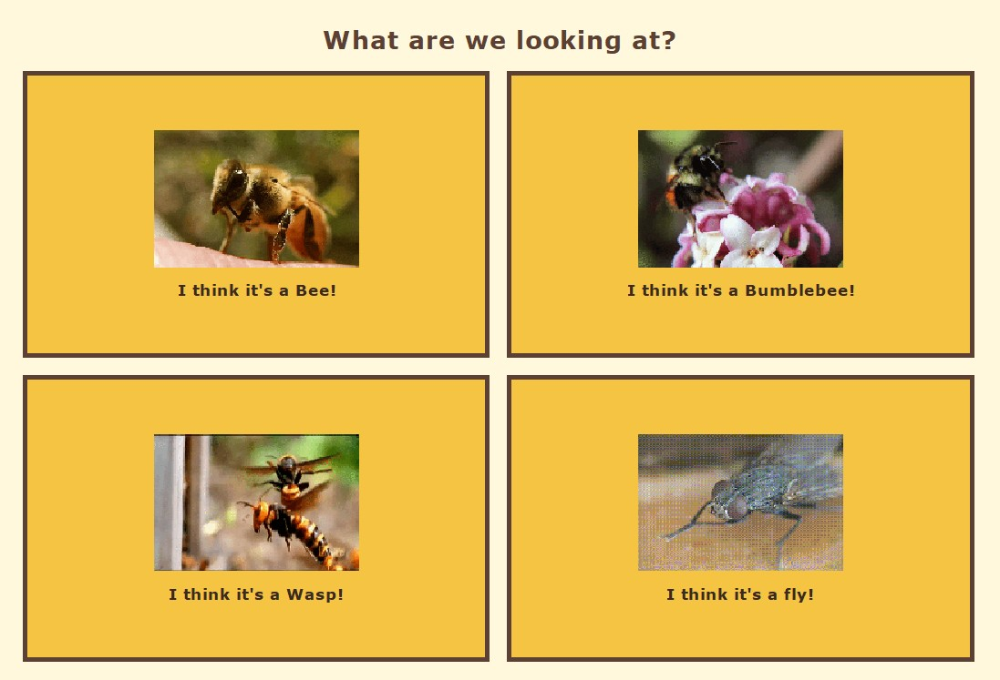

GitHub
GitHub

Bioinformatics / Protein Structure
Protein Structure Analysis: AGER
Analysis of the AGER protein using sequence data, biological databases, genetic variation and structure prediction.
I build data-driven tools and computational solutions that turn complex biological information into meaningful, understandable insights.
Selected work

Bioinformatics / Protein Structure
Analysis of the AGER protein using sequence data, biological databases, genetic variation and structure prediction.
Software / Biological Data
A Java application for organizing blood-test data, comparing biomarkers with reference ranges and visualizing results.

Software / Biological Classification
A Java Swing application for identifying bee species through biological traits and a user-friendly classification interface.
Technical profile
Python, Java, SQL, JavaScript, HTML and CSS
Building applications, scripting analyses, processing data and developing responsive web interfaces.
Pandas, NumPy, Jupyter Notebook, SQL and visualization
Cleaning, exploring and visualizing biological and structured datasets to identify patterns and insights.
Scikit-learn, classification, model evaluation and validation
Developing and evaluating predictive models for classification and data-driven biological questions.
Sequencing quality control, Cutadapt, SPAdes, QUAST, BUSCO, gene-expression analysis, DESeq2, AlphaFold2, ColabFold, UniProt, Ensembl, ClinVar and PDB
Assessing sequencing-read quality, trimming reads, assembling and evaluating bacterial genomes, exploring gene-expression workflows, interpreting genomic annotations, and investigating proteins, genes and genetic variants.
Git, GitHub, Linux, VS Code and reproducible workflows
Version control, project organization, documentation and maintaining transparent development workflows.
More work
Health Data / Concept Design
A concept exploring how biomarkers, lifestyle information and health data could be represented in a personalized digital model.
Machine Learning
A future project using biological or healthcare data to demonstrate preprocessing, model comparison and evaluation.
Data Science
A future end-to-end data project including cleaning, exploratory analysis, visualization and communication.
About me
I am completing a bachelor’s degree in bioinformatics and have experience across biology, laboratory work, programming, data science and machine learning.
I enjoy developing tools that make scientific data easier to explore, understand and communicate. My interests include molecular biology, biomarkers, genetics, protein structure, health data and computational approaches to biological problems.
I am currently expanding my portfolio with additional data science and machine learning projects while preparing for a career in data, bioinformatics or scientific software development.